Least squares problems numerical methods¶
 ,
,  ,
and a vector
,
and a vector 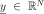
, we want to find a vector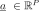
such that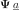
is the best approximation to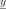
in the least squares sense. Mathematically speaking, we want to solve the following minimization problem: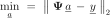
In the following, it is assumed that the rank of matrix
is equal to
.
Method of normal equations

 is symmetric and positive definite. The system can be solved using the
following Cholesky factorization:
is symmetric and positive definite. The system can be solved using the
following Cholesky factorization:
 is an upper triangular matrix with positive
diagonal entries. Solving the normal equations is equivalent to
solving the two following triangular systems, which can be easily
solved by backwards substitution:
is an upper triangular matrix with positive
diagonal entries. Solving the normal equations is equivalent to
solving the two following triangular systems, which can be easily
solved by backwards substitution: ). More precisely, the normal equations are
always more badly conditioned than the original overdetermined system,
as their condition number is squared compared to the original problem:
). More precisely, the normal equations are
always more badly conditioned than the original overdetermined system,
as their condition number is squared compared to the original problem:
As a consequence more robust numerical methods should be adopted.
 can be factorized as
follows:
can be factorized as
follows: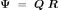
 is a
is a  -by--matrix with
orthonormal columns and is a
-by--upper triangular matrix. Such a QR
decomposition may be constructed using several schemes, such as
Gram-Schmidt orthogonalization, Householder reflections or Givens
rotations.
-by--matrix with
orthonormal columns and is a
-by--upper triangular matrix. Such a QR
decomposition may be constructed using several schemes, such as
Gram-Schmidt orthogonalization, Householder reflections or Givens
rotations.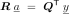

 .
Thus this error is expected to be much smaller than the one associated
with the normal equations provided that the residual
.
Thus this error is expected to be much smaller than the one associated
with the normal equations provided that the residual
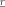
is “small”. reads: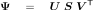
 and
and
 are orthogonal matrices, and
are orthogonal matrices, and
 can be cast as:
can be cast as:
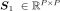
is a diagonal matrix containing the singular values of
.
of
.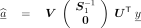

 is obtained by extracting the
first columns of
is obtained by extracting the
first columns of  .. In this case the resulting
vector
.. In this case the resulting
vector  corresponds to the minimum
norm least squares solution.
corresponds to the minimum
norm least squares solution.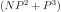
with a factor ranging from 4 to 10, depending on the numerical scheme used to compute the SVD decomposition. This cost is higher than those associated with the normal equations and with QR factorization. However SVD is relevant insofar as it provides a very valuable information, that is the singular values of matrix.Comparison of the methods
Several conclusions may be drawn concerning the various methods considered so far:
If
 , normal equations and Householder QR
factorization require about the same computational work. If
, normal equations and Householder QR
factorization require about the same computational work. If
 , then the QR approach requires about twice as much
work as normal equations.
, then the QR approach requires about twice as much
work as normal equations.However QR appears to be more accurate than normal equations, so it should be almost always preferred in practice.
SVD is also robust but it reveals the most computationally expensive scheme. Nonetheless the singular values are obtained as a by-product, which may be particularly useful for analytical and computational purposes.
API:
See the available least squares methods.
References:
Bjorck, 1996, “Numerical methods for least squares problems”, SIAM Press, Philadelphia, PA.